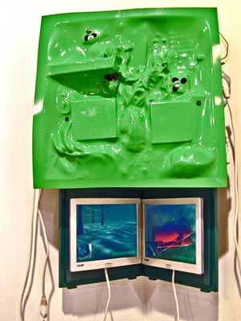
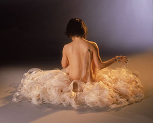
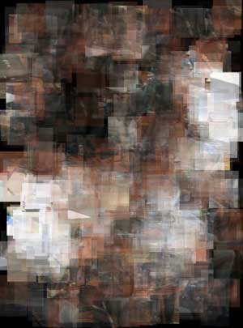
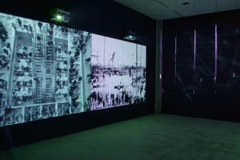
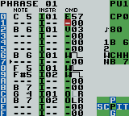
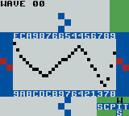
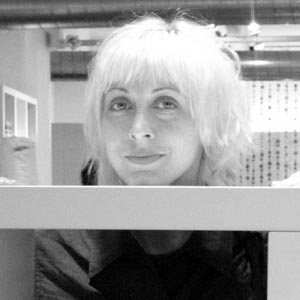
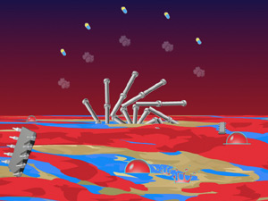

|
| |
We are pleased to present :
four
tuesday night talks with new media artists
spring 2005
::::::::::::::::::::::::::::::::::::::::::::::::::::::::::::::::::::::::::::::
please join
us!
Room
1410, 163 William Street, Pace University, NYC
free admission
contact co-directors Jillian Mcdonald + Francis T Marchese
assistant director Will Pappenheimer
digitalgallery@pace.edu :: 917.779.4947
<click for printable pdf>
::::::::::::::::::::::::::::::::::::::::::::::::::::::::::::::::::::::::::::::
the lineup
6pm.
tuesday feb 15 :: paul
johnson
6pm. tuesday mar 15 :: yael
kanarek + marek walczak
6pm. tuesday mar 29 :: jody
zellen (LA) + johan kotlinski (sweden)
6pm. tuesday apr 19 :: mary
flanagan + kristin lucas
::::::::::::::::::::::::::::::::::::::::::::::::::::::::::::::::::::::::::::::
paul
johnson
links::
Artist's
Site

bio :: Paul was born in Pasadena, California in 1969. He grew up in Los Angeles and Minneapolis / St. Paul, Minnesota. He moved to New York City in 1988 where he received his BFA from Pratt Institute and MFA from Hunter College.
statement
::
Paul
Johnson is a New York based artist whose expirements with consumer
electronics in the early 90's included video projectors made from orange juice
boxes, vacuum cleaners, and magnifying glasses. More recently he
has been writing video games and building networked game consoles.
This past spring Paul exhibited new work at Postmasters gallery and
currently has pieces on view at the Museum of the Moving Image.
yael
kanarek
links::
Artist's Site

statement:: Conceived in 1995, World of Awe is an integrated media project that uses the conceptual framework of a 'world' to explore storytelling in the digital era. At the core is The Traveler’s Journal—an original story about a search of a lost treasure. Using the ancient genre of the traveler's tale, the project draws connections between travel, memory and technology, be it through the lament over the absence of the lover or a comical declaration of loyalty to the floppy disk. The narrative expands through projects and collaborations that are shown online, in art galleries and performance spaces.
bio::
Yael
Kanarek is a media artist. She has been developing her project World of Awe
since 1995. Selected for the Whitney Biennial 2002, Yael is a recipient of the
Jerome Foundation Media Arts grant, the NYFA fellowship award and A.I.R at Harvestworks.
In 2002 she completed a net art commission for SFMOMA. In 2003 she launched
a net.dance for Turbulence.org and was R&D resident at Eyebeam. World of
Awe was featured in the Sunday New York Times in April 2004. In 2002 she was
awarded the CNRS/UNESCO Lewis Carroll Argos prize in France. Yael is represented
by Bitforms gallery in New York.
marek
walczak
links::
Artist's Site

statement:: In the collaborative process that passes as my work, which is really only a kind of playing, today we are into feeds and seeds! Feeds condition an odd contemporary desire to expose ourselves, our images, links, desires and location to others… perhaps the conditioning imposed by feeds can make this palatable? Seeds suggest the 'growing' of architectures, of inhabitations, rarely permanent, that can deal with this newly odd relationship between what's private or public. Technically things are getting easier, its now entirely plausible to create interactive architecture that's semi-permanent.
bio::
Marek Walczak is an artist and architect who is interested in how people participate
in physical and virtual spaces. This has led to projects such as Apartment,
shown at the Whitney Museum and many venues worldwide, and Dialog Table, a commission
of the Walker Art Center that replaces a keyboard and mouse with a shared interface
based on gesture recognition technology. Current projects include a one block
long façade at 7 World Trade Center that reacts to pedestrians walking
beneath it (for James Carpenter Design) and interactive video installations
such as Third Person, recently shown at the ICA, London.
jody
zellen :: Pace Digital Gallery
Artist-in-Residence 2005
links::
Artist's Site

statement:: In her work Jody Zellen explores architectural spaces as well as digital spaces, making projects that are both site specific and unexpected. Her juxtaposes images of old and new cities reflecting a sense of nostalgia for the past, contrasted with wonder about the future. The works mirror the experience of navigating a charged metropolitan area. Through a bombardment of disparate images her pieces celebrate the complexity and unpredictability of urban space. A walk through the city becomes a vehicle for a meditation on space, time, and human interaction. She employs media-generated representations of contemporary and historic cities as raw material for aesthetic and social explorations.
bio::
Jody Zellen is an artist living in Los Angeles, California. She works in many
media simultaneously making photographs, installations, net art, public art,
as well as artists' books that explore the subject of the urban environment.
She was a recipient of a 2004 Cultural Affairs (COLA) Grant. Recent exhibitions
included include: Futuresonic 04, Manchester England; Images Festival, Toronto,
Canada, 2004; Festival of Cinema Nouveau Cinema, Montreal; FILE 2004, Brazil;
and COSIGN 2004, Croatia. Her website "Ghost City" (www.ghostcity.com)
begun in 1997 is an ever changing, poetic meditation on the urban environment.
In addition to "Ghost City" other web projects include "Random
Paths"
(www.randompaths.com); "Visual Chaos" (www.visualchaos.org). Crowds
and Power was the October 2002 portal for the Whitney Museum's artport (http://artport.whitney.org).
"Disembodied Voices" (www.disembodiedvoices.com) is her latest web
project. It has recently been converted into a 5 projector interactive installation.
johan
kotlinski
(sweden)
links::
little
sound dj 8-bit
peoples
 
bio
::
Johan Kotlinski is a 26-year old M.Sc. Media Engineering student from the Royal
Institute of Stockholm, Sweden. He is most known for having developed the Little
Sound Dj program, an independently produced handheld music editor for the Game
Boy. It has inspired the growth of the so-called chip music scene - a music
style that is focused on
making music with vintage computers like Commodore 64, Amiga, NES, Game Boy
et.c.
statement
::
The
talk will present the evolution of Amiga music software from 1985 to 1992, and
discuss how it's evolution was connected to social and technical issues. In
particular, to the birth and growth of the European home computer hacking scene
- which in turn originated from the by now mostly forgotten early 1980's American
hacking culture.
There will also be a case study of my Gameboy program, Little Sound Dj, which
is a modern version of the classic music editors from the 1980's. I will try
to show how interface concepts from the 1980's can be combined with present
ideas and tools to generate a useful and modern handheld music editor.
mary
flanagan
links::
Artist's
Site

bio
:: statement ::
Mary
Flanagan is an inventor-designer-activist in New York City and leads the tiltfactor
research group at Hunter College. Flanagan's artwork has been shown internationally
at venues including the Whitney Museum of American Art, SIGGRAPH, Ars Electronica,
the Guggenheim, and other international venues. Her essays on digital art and
gaming have appeared in many periodicals and books including Art Journal and
Wide Angle. Her books include Reload: Rethinking Women + Cyberculture (MIT Press
2002), the co-written book Similitudini. Simboli. Simulacri (SIMilarities, Symbols,
Simulacra) in Italian (Unicopli, 2003), and reskin (forthcoming, MIT Press).
She is the creator of “The Adventures
of Josie True,” the first internet adventure game for girls, and is co-founder
of Rapunsel, a research project to teach girls programming (http://www.rapunsel.org).
Her projects have been funded by the National Science Foundation, the Pacific
Cultural Foundation, and the National Endowment for the Arts. In the 1990s,
Flanagan was also a media producer/game designer, garnering over 20 international
awards for titles produced for The Discovery Channel, Creative Wonders/ABC,
and Knowledge Adventure. She is Associate Professor of Software Art and Culture
at Hunter College, NYC.
kristin
lucas
links::
Artist's Site

bio :: Kristin Lucas has been screening and exhibiting work in the US and abroad since 1996. Her sci-fi distopias and conspiracy theories balance seriousness with humor, and have resulted in video, internet, sculpture, performance, and installation works. Lucas’s works are represented by Electronic Arts Intermix (EAI) and Postmasters Gallery. She recently participated in the Lower East Side Rotating Studio Program (Artists Alliance, Inc) and produced a radio play for the 6th Werkleitz Biennale in Halle, Germany. Lucas received her BFA from Cooper Union in New York in 1994 and is taking drumming lessons from a CD.
statement
::
Kristin Lucas will present patch-works for correspondence and performance in
addition to exercises in self-medication. These patch-works are informed by
Lucas’s on-going interest in mediated communication, the subtleties between
brainwashing, programming, and evolutionary mutation, compliance and compatibility,
and by research on the social ecology of Silicon Valley and the legacy of Cold
War science. Among the works Lucas will present are Your New ID (2005), an on-and-offline
correspondence project, and Bubble Bath (2005), a computer animation of an “imagined”
machine that randomly heaves silicon chips and pills.


 Fine Arts
Department
Fine Arts
Department